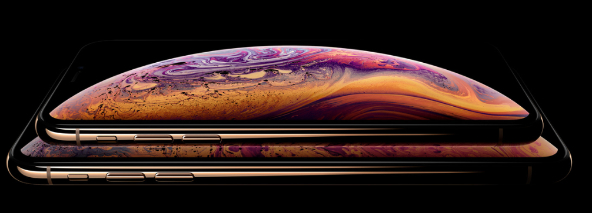
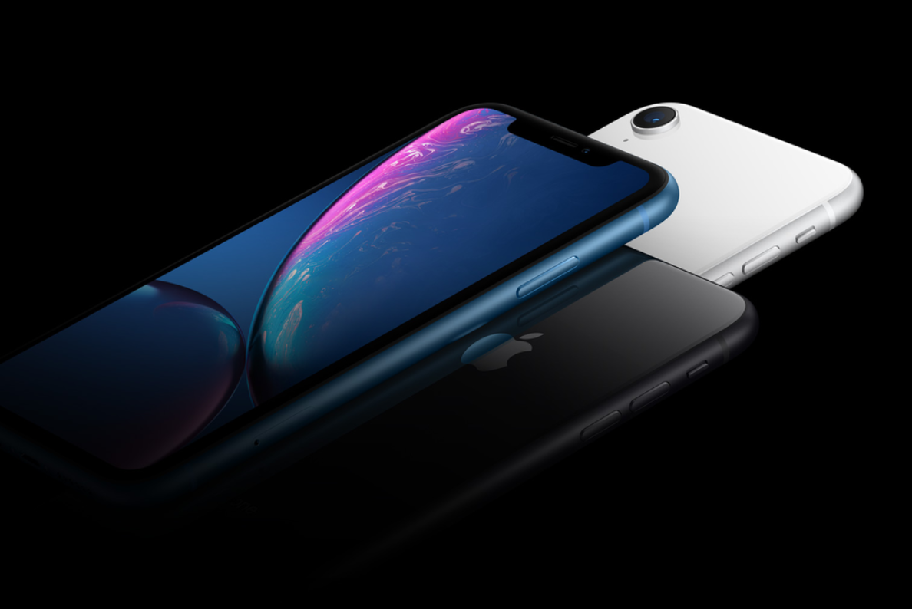
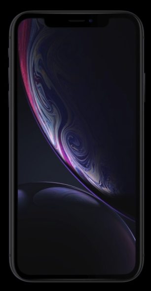
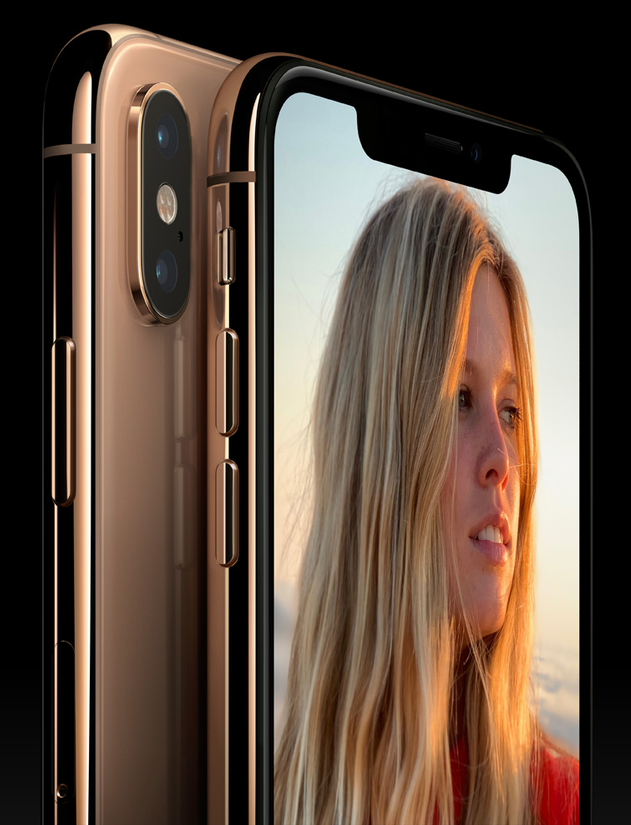

iPhone XS and iPhone XS Max:
EVERYTHING YOU NEED TO KNOW


What's the difference between the iPhone XS and iPhone XS Max?
iPhone XS has a 5.8-inch OLED display and the iPhone XS Max has a 6.5-inch OLED display, meaning the iPhone Xs Max is larger; however, other than that, there is no difference between the two new phones on the inside.
The Insides
The iPhone Xs and iPhone XS Max use the new A12 Bionic chip. Both phones have a 6-core CPU and a 4-core GPU, both of which are faster and more powerful than iPhone X from last year.
The Camera
The iPhone XS and iPhone XS Max both come with a dual camera system on the back that consists of an f1.8 12MP wide-angle lens and an f2.4 12MP telephoto lens.
The Video
The video capabilities are the same as the last year's iPhone X, meaning you can expect the iPhone XS and iPhone XS Max to have the following video specs:
- 4K video recording at 24 fps, 30 fps or 60 fps
- 1080p HD video recording at 30 fps or 60 fps
- 720p HD video recording at 30 fps
- Optical image stabilization for video
- Slo‑mo video support for 1080p at 120 fps or 240 fps

iPhone Xs Max
6.5″ display
iPhone Xs
6.5″ display
iPhone Xr
6.5″ display

Exceptional materials
The most durable front glass ever in a smartphone. Precision-machined, aerospace-grade aluminum bands. Water and dust resistance.2 And six stunning new finishes.
Seven-layer color process
The beautiful finishes of the back glass are achieved using an advanced process that allows for deep, rich colors.
Aerospace-grade aluminum bands
A special Apple designed alloy is precision-machined to create structural bands, and anodized to complement the color of the back glass.
Wireless charging
The glass back allows iPhone XR to charge easily and wirelessly.

Advanced Face ID
SECURITY IS SIMPLE WHEN YOUR FACE IS YOUR PASSWORD.
You can unlock your iPhone, log in to apps, and pay for things with a glance. It’s the most secure facial authentication ever in a smartphone. And now it’s even faster.

No other phone
is like iPhone
EVERY DECISION THAT GOES INTO IPHONE
MAKES IT STAND APART